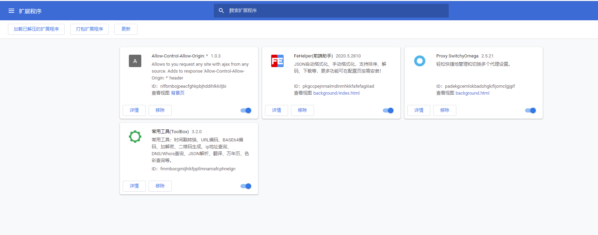
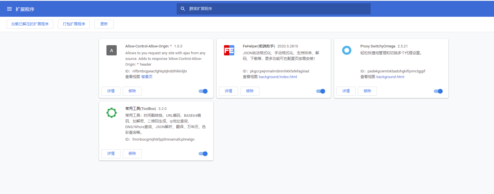

网址工具
excel json 转换 https://www.bejson.com/json/col2json/
图片压缩 https://tinypng.com/
网站视频倍速播放
for(let video of document.querySelectorAll('video')) { video.playbackRate=2}
报错问题网站（英文）
stack overflow
谷歌浏览器插件

AST
AST 在线测试工具：https://astexplorer.net/

excel json 转换 https://www.bejson.com/json/col2json/
图片压缩 https://tinypng.com/
for(let video of document.querySelectorAll('video')) { video.playbackRate=2}
stack overflow

AST 在线测试工具：https://astexplorer.net/